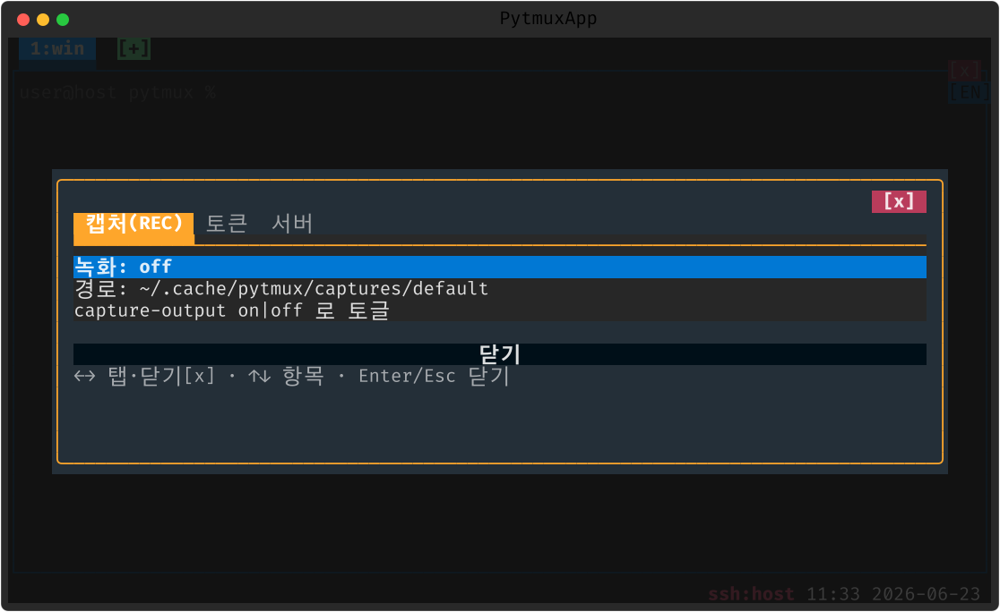

rec
패널의 원시 PTY 출력 바이트를 무손실로 기록합니다. 화면 깨짐 분석, 터미널 앱 동작 재현(리플레이), 버그 리포트 첨부에 씁니다.
여는 법
| 명령 | 설명 |
|---|---|
capture-output | 패널 출력 캡처 토글 [on|off] (기본 off, 설정 영속; 별칭 capture-toggle) |
캡처 중에는 상태 표시가 붙고, 로그는 captures/<세션>/pane-N.log 에 쌓입니다. 통합 정보 팝업에서 캡처 상태를 확인할 수 있습니다.

메모
기록은 렌더 결과가 아니라 PTY 원시 바이트라 이스케이프 시퀀스까지 그대로 남습니다. 오래 켜 두면 파일이 커지니 필요한 구간만 켜는 것을 권합니다.
끄기 · 제거
:plugins 관리 팝업에서 끄거나(가역), pytmuxlib/plugins/rec/
디렉토리를 지우면(delete-to-disable) 명령·자동완성·메뉴 어디에도 나타나지 않고 조용히
사라집니다. 코어는 영향받지 않습니다. ← 플러그인 개요